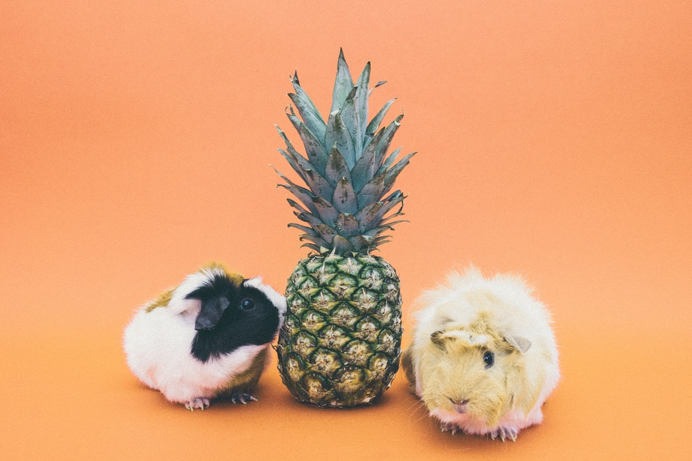

기니피그는 채소류와 수분이함유된 사료를 먹는다면 따로 물을 섭취할 필요가 없지만,
말린 사료를 먹일 때는 반드시 물을 주어야 한다. 기니피그는 1년 내내 번식이 가능하다.
암컷은 평균 4마리를 출산하고, 임신기간은 68일이다. 기니피그의 수명은 일반적으로 3~5년 정도이다.
야생에서 서식하는 기니피그는 브라질 기니피그, 샤이니 기니피그, 몬태인 기니피그,
그레이터 기니피그의 4종이 있다.
기니피그는 페루에서 3,000년 전부터 사육되었으며, 에콰도르·페루·볼리비아 원주민들에게
주요 식량원 중의 하나이다.